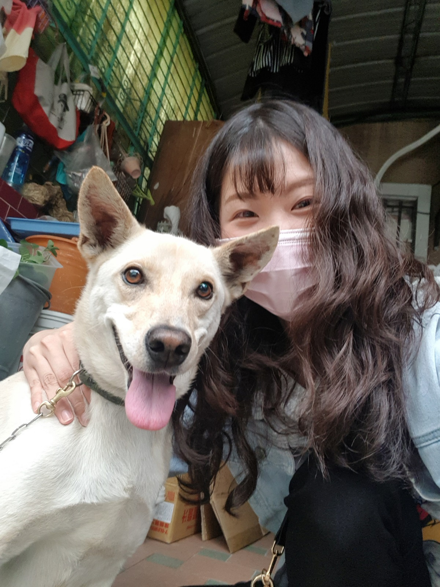

嗨!
我是Ashley!
畢業於元智大學資訊傳播學系，
曾經在TVBS聯利媒體業務部擔任內勤專員6年。
2022年6月起加入Alpha Camp學習JavaScript 全端開發課程，
在一邊全職工作兼顧學習的狀態下，於2023年1月順利結業。

關於我的一些事
我在Alpha Camp完成了JavaScript 全端開發課程。大學科系曾學過C++和C#語言，為寫程式這件事打下基礎。為了職涯發展考量，因此離開固有的舒適圈，重新學習程式語言。
我的主要技能有：網頁切版（HTML/CSS/JS）、使用CSS預處理器-SCSS、React.js / Next.js、Node.js / Express、Git版本控制。
網頁切版（HTML/CSS/JS）
使用CSS預處理器-SCSS
React.js/Next.js
Node.js / Express
Git版本控制
| 自我簡介 | 擁有6年的工作經驗，過往工作中需要時常與人溝通交流，跨組間的協調共同達成客戶需求。因為不喜歡一成不變的工作狀態到老而選擇跳脫舒適圈，進入變化多端的coding世界。平常會在Medium撰寫自己摸索程式的學習心得，將自己程式小白的學習經驗分享給更多人。 |
| 學歷 | 元智大學 資訊傳播學系互動育樂科技組 學士 |
| 經歷 |
|
| 工作技能 |
|
| 開發經驗 |
在Alpha Camp學習的過程中，除了使用codepen以及在github上放了自己做的許多小專案外，畢業考也曾參與 Twitter 小組專案挑戰多人協作採用前後端開發模式做了simple twitter，在此之中熟悉了Git版本控制。 在網頁前端專案方面自己做了2023韓國旅遊推薦網和個人Portfolio Website、用Express.js做成2023台南精選小吃網站、用React.js串接unsplash API做成的圖片搜尋網站，並在開發過程中套用了Bootstrap、Font Awesome等工具，也使用了SCSS寫法。 |
